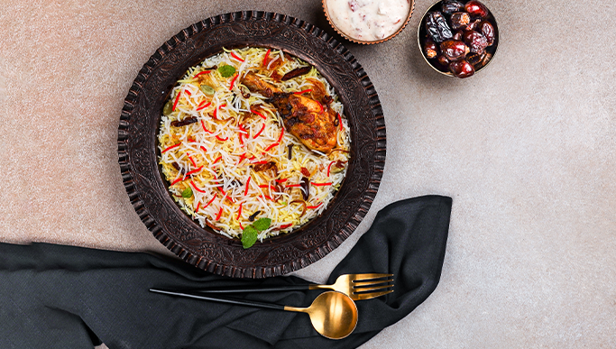

Biryani Recipe

Authentic Hyderabadi Biryani Recipe!
Biryani is one of the most popular dishes in South Asia. It is a mixed rice dish
and the main ingredients include Indian spices, rice, meat, and sometimes may also include eggs and potatoes.
It is usually accompanied with raita
While there are many ways to prepare biryani (some of them being very complicated and time consuming),
today we will be making an Authentic Hyderabadi style biryani!
Ingredients:
- Spices:
- Green Cardamom (6)
- Black Cardamom (2)
- Blade Mace (1)
- Cinnamon (1 inch)
- Cloves (6-8)
- Black Peppercorns (8-10)
- Star Anise (1)
- Caraway Seeds
- Red Chilli Powder (1 tsp)
- Turmeric Powder (1 tsp)
- Garam Masala Powder (1 tsp)
- Basmati Rice(1.5 cups)
- Chicken (750 grams)
- Ginger Garlic Paste (1 tsp)
- Green Chillies (2-3 Finely chopped)
- Yogurt (1 cup)
- Fried Onions (3/4 cup + 6 tbsp)
- Fresh Mint Leaves (12-16)
- Dried Rose Petals (3 tbsp)
- Ghee (3 tbsp)
- Ginger (1 inch)
- Saffron Milk (2 tbsp)
- Whole wheat flour, dough as required
- Salt
Steps:
- Soak Biryani Rice in sufficient water for 30 minutes
- Take a piece of muslin cloth. Add 6 green cardamoms, 2 black cardamoms, mace, cinnamon, 6-8 cloves, 8-10 peppercorns, star anise, and 1/2 teaspoon of caraway seeds. Now tie the cloth into a potli.
- Heat 3 cups of water in a deep non-stick pan. Add the potli and salt as required. Now cover the pan with a lid and bring to a boil.
- Put the chicken pieces in a bowl. Add ginger-garlic paste, chopped green chilies, the remaining caraway seeds, yogurt, ¾ fried onions, 12-16 mint leaves, chili powder, turmeric powder, 1 teaspoon of garam masala powder, and 1 tablespoon of dried rose petals. Mix all of them well and set them aside to marinate.
- After draining the water it was soaking in, add the Biryani Basmati Rice to boiling water. Cover and cook until 3/4th done.
- Add salt to the chicken pieces and mix them well.
- Heat 3 tablespoons of ghee in another deep non-stick pan. Add chicken pieces with the marinade.
- Roll the wheat flour dough into a cylindrical shape and place it on the lid.
- Chop green chilies and add them to the chicken. Now mix it well and cook on high heat for 3-4 minutes.
- Discard the potli, and strain the Daawat Biryani Basmati Rice in a colander. Now add 2 tablespoons of ghee to the Biryani Basmati Rice and mix well.
- Transfer some of the chicken pieces into a bowl and set them aside.
- Spread a layer of strained Biryani Basmati Rice on the chicken pieces that were in the pan. Top it with 3 tablespoons of fried onions, 1 tablespoon of dried rose petals, and half chopped ginger. Now sprinkle some garam masala powder, add some mint leaves, and finally 1 tablespoon of saffron milk.
- Add the chicken pieces previously set aside on top, and once again spread a layer of strained Daawat Biryani Basmati Rice on top. Top it up with 3 tablespoons of fried onion, 1 tablespoon of dried rose petals, the remaining ginger strips, some mint leaves, 1 tablespoon of ghee, the remaining saffron milk, and again some garam masala powder.
- Now place the lid with dough on top and press. Cook on low heat for 20 minutes and then serve hot.
Home